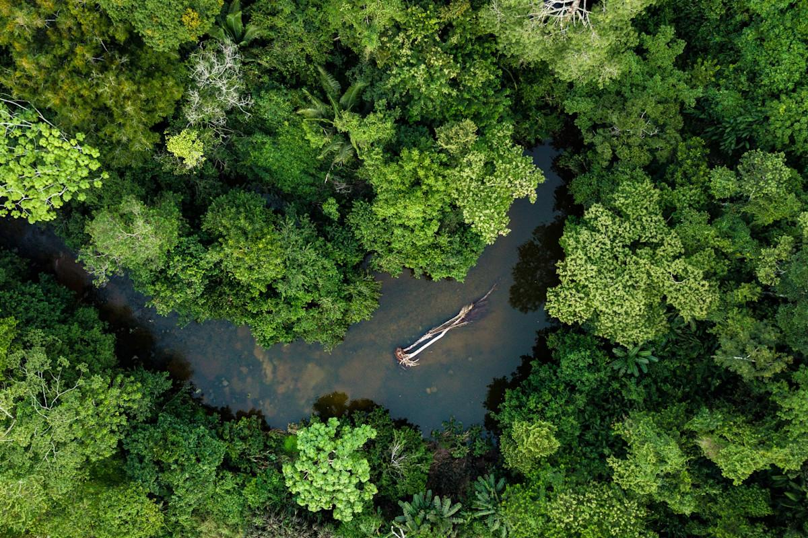
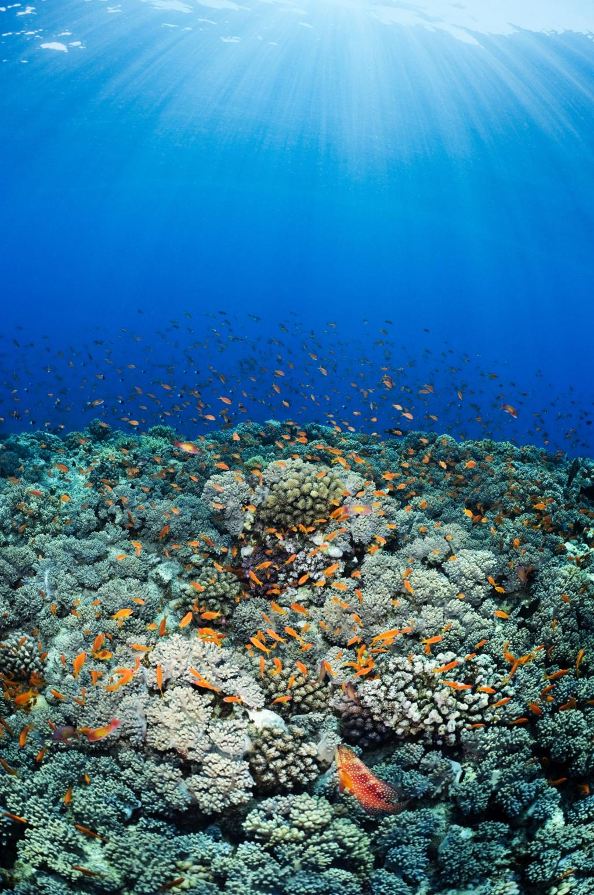
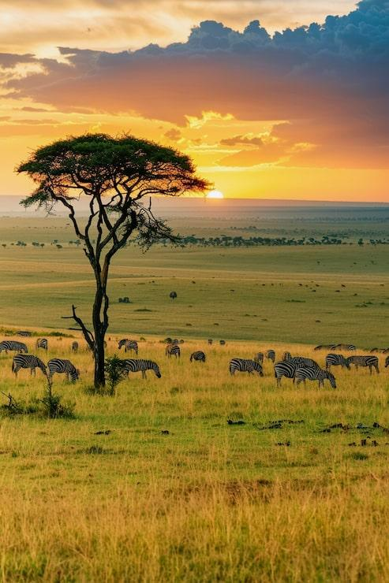
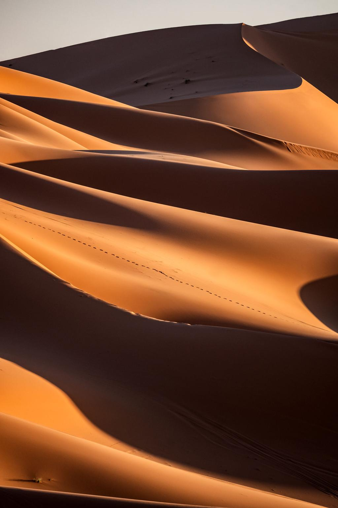
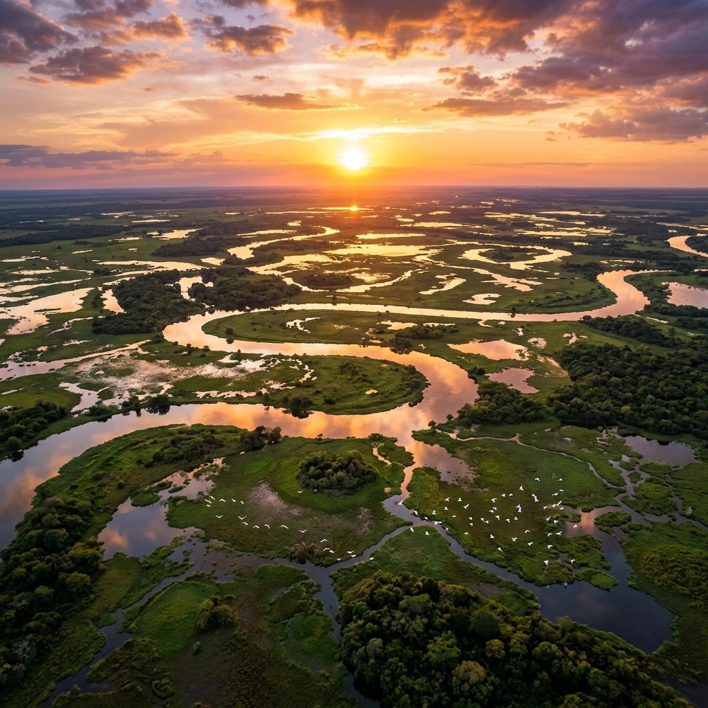
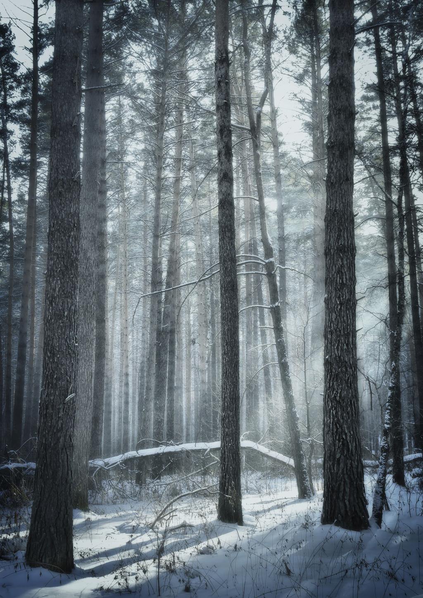
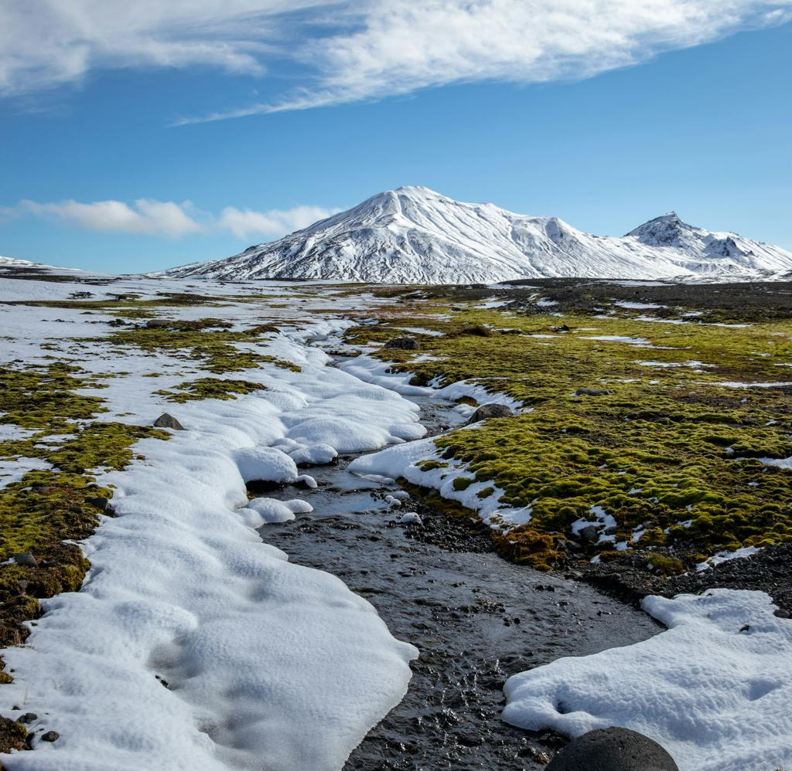

Explore.
Registre.
Proteja.
A plataforma global para registrar, monitorar e proteger a biodiversidade. Cada observação fortalece a ciência e aproxima pessoas da natureza.
Registrar observação
Fotografe um organismo, registre a localização e contribua para o conhecimento da biodiversidade.
O ARKA conecta pessoas e biodiversidade.
📷 Registre
Fotografe espécies e contribua para um banco de observações da biodiversidade.
🗺️ Explore
Visualize observações distribuídas pelo mapa e descubra os ambientes onde a vida ocorre.
🔬 Descubra
Explore informações sobre a fauna, a flora e os demais organismos do planeta.
Mapa Global
Veja registros distribuídos pelos biomas do planeta.

Explore as observações no mapa global.
Abrir mapaBiomas do Planeta
A biodiversidade não tem fronteiras. O ARKA conecta observações dos principais ecossistemas da Terra.

Florestas Tropicais
Amazônia, Congo e Sudeste Asiático.





